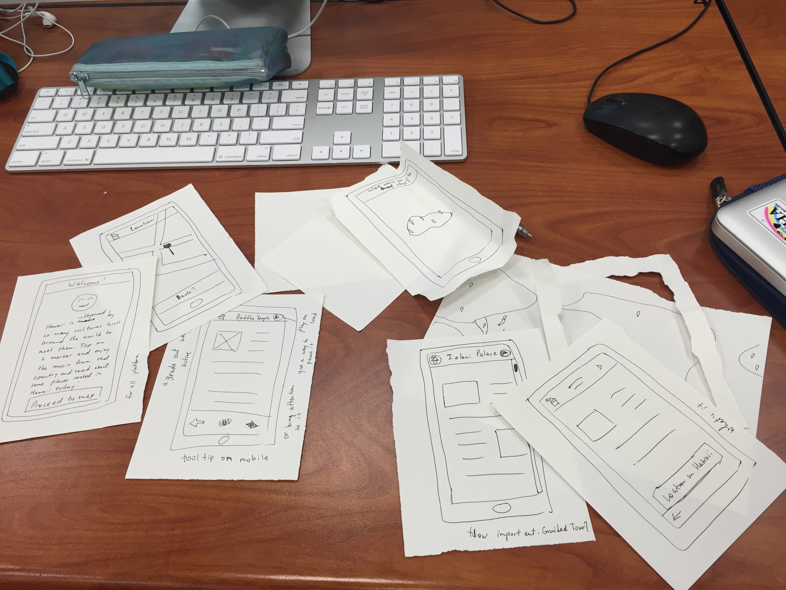

Based on the paper prototype exercise, it would seem as if my original idea will be too simple for users, which is something I thought was strived for in this class. Perhaps I am wrong in pursuing a self expressive concept for this project. Perhaps I should just aim to create a traveling map for tourists. I do not know what to do anymore. I'll figure something out. The final project will either be a site or an app. I just know anymore.
